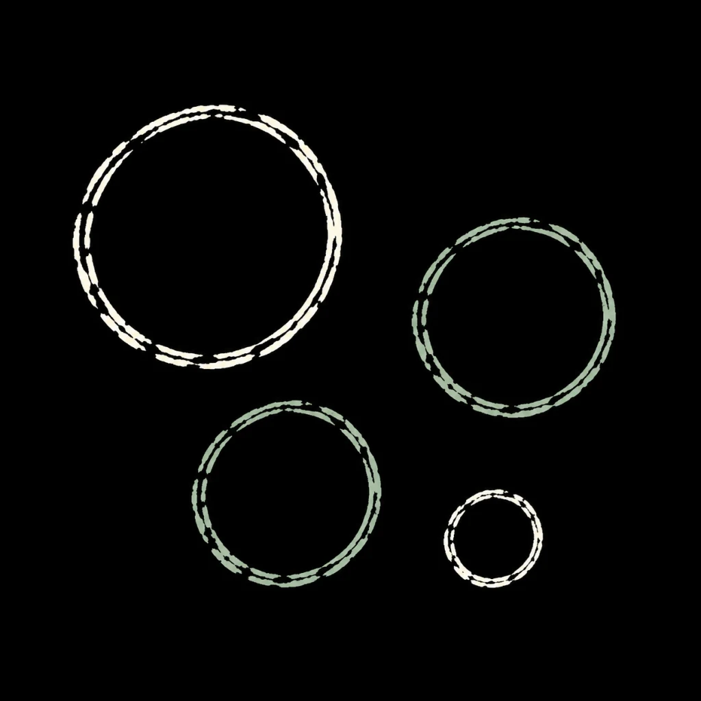
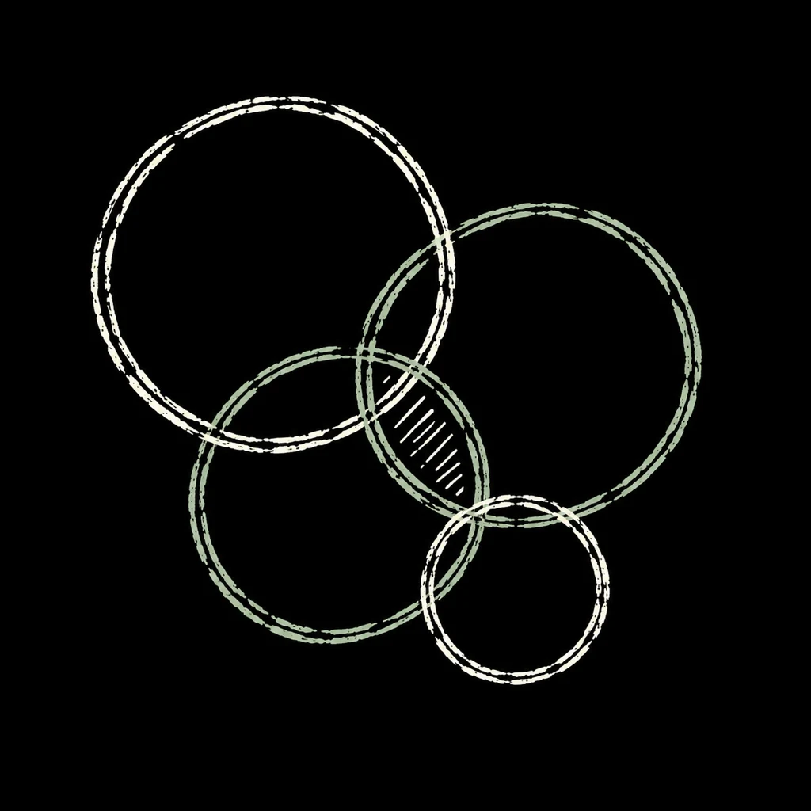
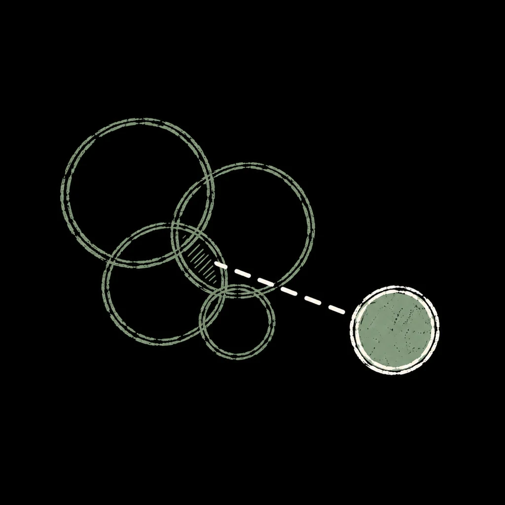
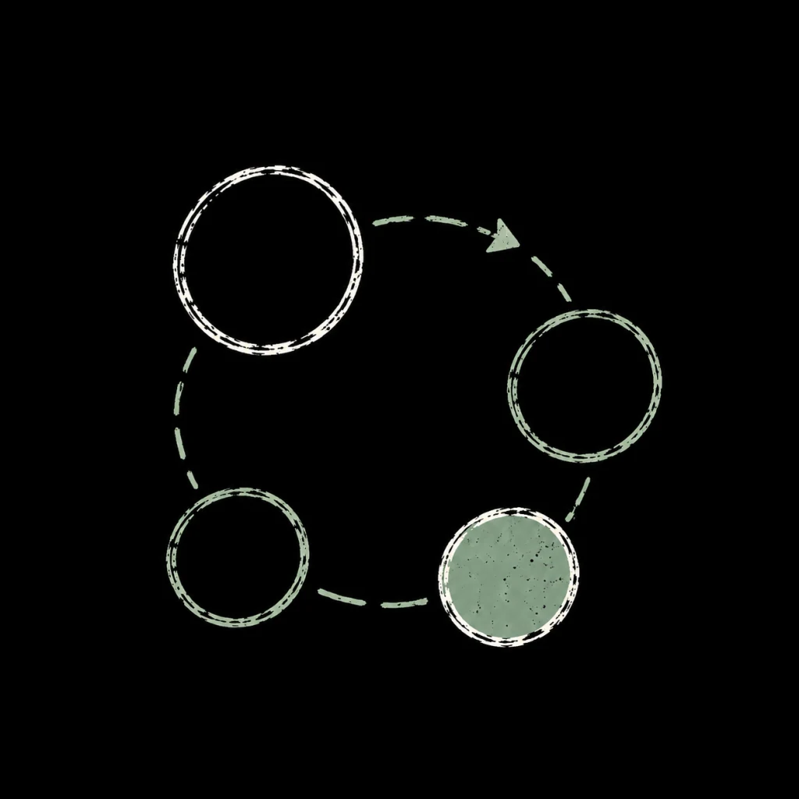

Operations & process improvement
Understand recurring problems, clarify responsibilities and improve how work moves between people.
Operations & systems consulting
I help small and midsize businesses improve processes, reporting and everyday workflows, with practical automation where it fits. Based in Ottawa, working across Canada.
Defined projects & ongoing part-time support
Grounded in hands-on experience.
Clearer handoffs · Useful reporting · Practical tools
What I can help with
Practical help with the processes, information and tools behind everyday work.
Understand recurring problems, clarify responsibilities and improve how work moves between people.
Make better use of existing software, improve how information is collected and reported, and build small tools where useful.
Regular part-time help with priorities, implementation and the practical work of keeping improvements moving.
How I work
We start with the work as it happens, choose an improvement that fits, and make sure someone can carry it forward.
See the approach in practice
01Watch how work actually moves and where it gets held up.

02Trace the extra time, rework, and pressure on the team.

03Identify the cause and choose the smallest useful improvement.

04Build it with the team, name an owner, and check that it lasts.
The person you work with
My background spans manufacturing, food and business operations. I combine that experience with practical process and tool building to help turn an agreed priority into something your team can use.
More about meA useful next step
Tell me a little about your business and what is getting in the way. We can work out a useful place to start.